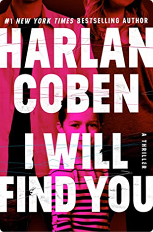

<dialog class="book-modal js-book-modal">
  <!-- <div class="book-modal-content">
    <div class="book-modal-left">
      
    </div>
    <div class="book-modal-right">
      <h2 class="modal-title">I will find you</h2>
      <p class="autor">Harlan Coben</p>
      <p class="prise">$15</p>
      <div class="button-wrapper">
        <button class="btn-primary" type="button">Add To Cart</button>
        <button class="btn-secondary" type="button">Buy Now</button>
      </div>
      <details>
        <summary>Details</summary>
        <p>
          I Will Find You is a gripping thriller by the master of suspense,
          Harlan Coben. The story follows David Burroughs, a former prisoner
          wrongfully convicted of murdering his own son. When he discovers a
          clue suggesting his son might still be alive, David escapes from
          prison to uncover the truth. Fast-paced, emotional, and full of
          unexpected twists — this novel will keep you hooked until the very
          last page.
        </p>
      </details>
      <details>
        <summary>Shipping</summary>
        <p>
          We ship across the United States within 2–5 business days. All orders
          are processed through USPS or a reliable courier service. Enjoy free
          standard shipping on orders over $50.
        </p>
      </details>
      <details>
        <summary>Returns</summary>
        <p>
          You can return an item within 14 days of receiving your order,
          provided it hasn’t been used and is in its original condition. To
          start a return, please contact our support team — we’ll guide you
          through the process quickly and hassle-free.
        </p>
      </details>
    </div>
  </div> -->
</dialog>
